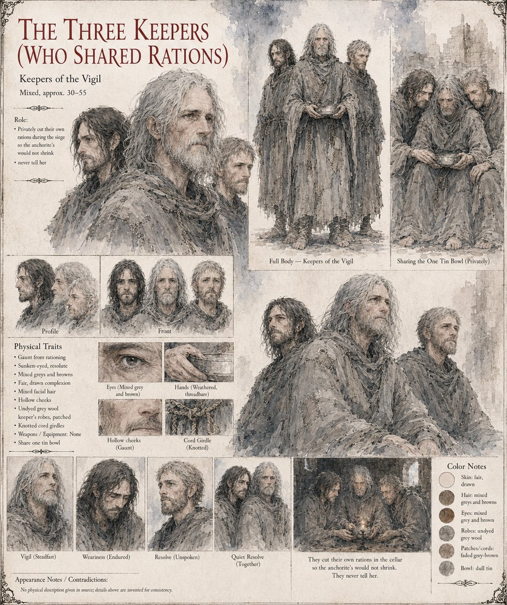

The Three Keepers (Who Shared Rations)
Keepers of the Vigil · approx. 30–55 years old
Three keepers of the Vigil who, in the Anchorite's hardest month of that year, privately work out between themselves whose own ration will shrink, and by how much, so that the Anchorite's will not. The manuscript says the arithmetic is never recorded in any log meant for outside eyes, never voted on and never fully spoken aloud between them: a vow the order accepted on her behalf is not, they feel, the kind of debt a siege gets to renegotiate. She is never told. She would have declined it immediately, by every keeper's private certainty, if she had been. The manuscript names none of the three.
The sheet gives their ages as mixed, approximately 30 to 55, and draws three gaunt, sunken-eyed men in patched undyed grey wool robes with knotted cord girdles: one dark-haired and bearded, one long-haired and white-bearded, one grey-fair with a short beard, hollow-cheeked, with eyes of mixed grey and brown, sharing a single dull tin bowl. Its expressions are steadfast, endured, unspoken and together, and its panels show them in a cellar over the bowl by a candle, captioned that they cut their own rations so the anchorite's would not shrink and never tell her. The sheet notes that the source gives no physical description; the details are its own.